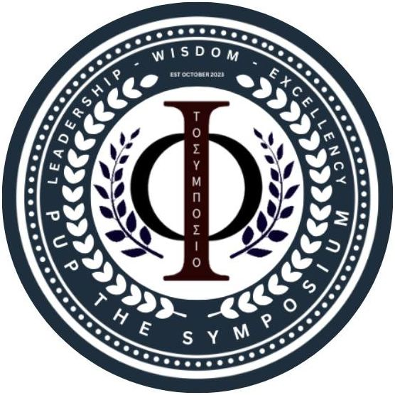
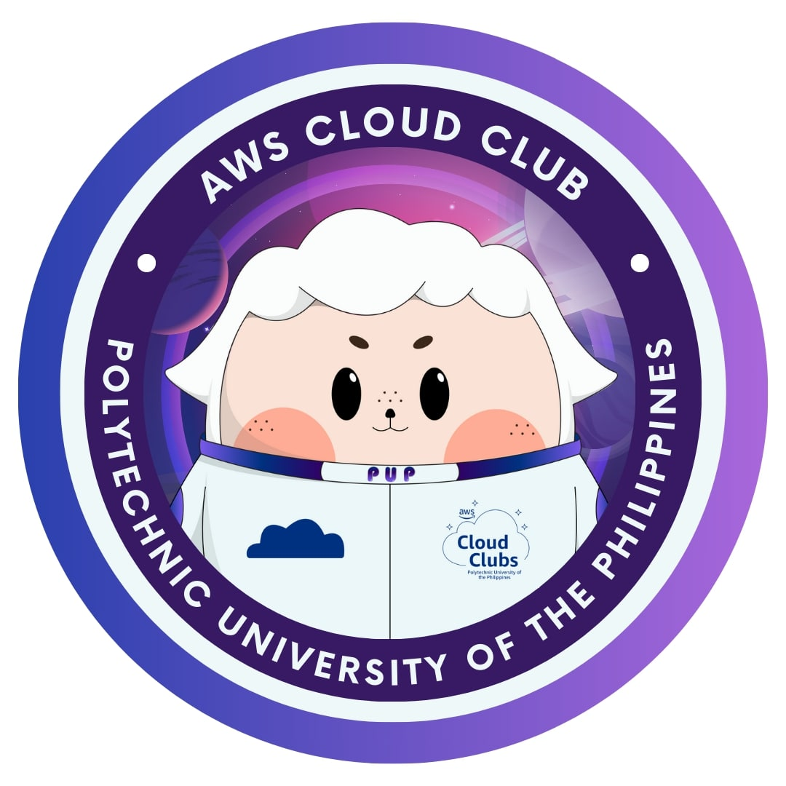
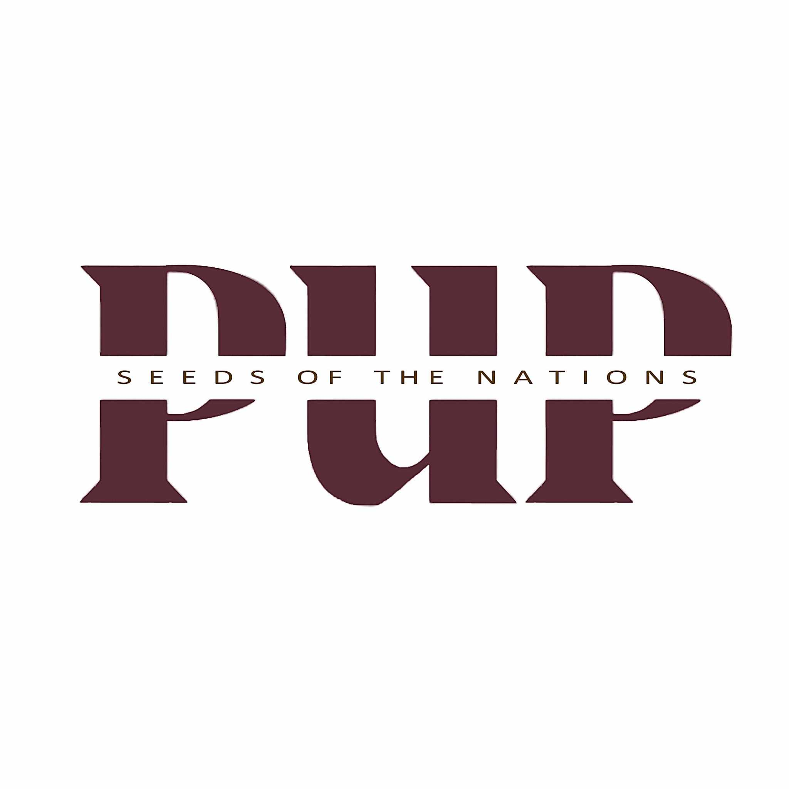

Moni Roy
Student

The purpose of this organization is to share and promote philosophy to all, and encourage students to partake and be involved in the diverse world of philosophy. The organization also aims to create a medium where philosophy enthusiasts are able to learn or delve deeper into the realm of philosophy and bridge the perspectives and learnings from the diverse community of the university.
How Students Can Join Our Organization:
We are currently having our membership drive that will last until April 12, 2025. Students may join by filling up our registration links below which will ask for all neccesary information.
The Symposium - Membership FormThe requirements and guidelines for membership:
The PUP The Symposium is open to all bona fide students who are enrolled full-time at the Polytechnic University of the Philippines Manila.

We are a pioneering student organization focused on AWS and cloud computing, building a nationwide community of passionate learners driving innovation through Amazon Web Services.
LEARN MORE
The Seeds of the Nations (SONs) is a campus-based ministry, which exists to develop young people in their character, knowledge, skills and vision.
LEARN MORE